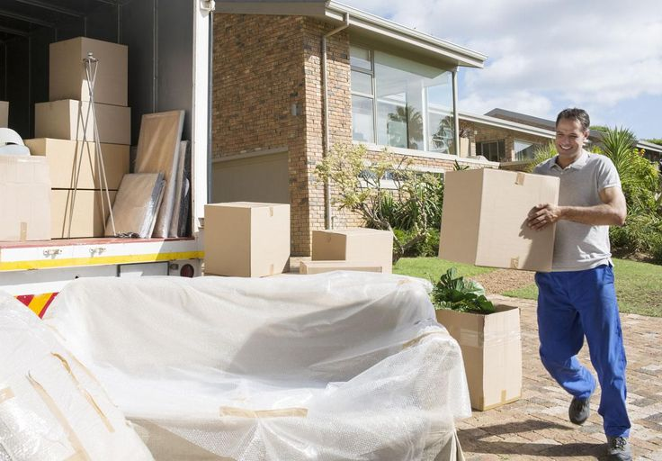

خطوات تخزين الأثاث لفترات طويلة: نصائح للحفاظ عليه

التخزين الصحيح للأثاث يضمن بقاءه في حالة ممتازة لسنوات. هذا الدليل سيعلمك كيفية حماية استثمارك من التلف والرطوبة والحشرات.
متى نحتاج لتخزين الأثاث؟
تغيير المسكن
فترة انتقالية بين منزلين أو تقليص حجم المنزل
السفر الطويل
العمل في الخارج أو الدراسة لفترات مطولة
تجديد المنزل
أعمال صيانة أو تجديد شاملة تتطلب إفراغ المنزل
التخزين الموسمي
أثاث الحديقة أو القطع الموسمية غير المستخدمة
أنواع المستودعات والتخزين
خطوات التحضير للتخزين
التنظيف الشامل
قائمة التنظيف:
- الأثاث الخشبي: تنظيف بالملمع الخاص، إزالة الغبار من الشقوق
- الأثاث المنجد: تنظيف عميق بالبخار، تجفيف كامل
- الأجهزة: تنظيف داخلي وخارجي، إزالة الأطعمة المتبقية
- المعادن: تلميع وإزالة الصدأ، طلاء واقي إذا لزم
الحماية والتغليف
مواد الحماية:
البلاستيك المتقلص
للأثاث المنجد والقطع الكبيرة
البطانيات المبطنة
للحماية من الخدوش والصدمات
كرات النفتالين
لطرد الحشرات والعث
أكياس هلام السيليكا
لامتصاص الرطوبة الزائدة
تخزين حسب نوع الأثاث
غرف النوم
الأسرة:
- فك الإطار واحفظ البراغي
- لف المرتبة بالبلاستيك
- خزن المرتبة مستوية أو على الجانب
- تجنب وضع أثقال فوق المرتبة
الخزائن:
- أزل الأبواب والأدراج
- لف القطع الزجاجية بحذر
- ضع مواد مانعة للرطوبة بالداخل
- خزن في وضع عمودي إذا أمكن
أثاث الصالة
الكنب والأرائك:
- تنظيف عميق قبل التخزين
- رفع الأرجل لتجنب تلف الأرضية
- استخدام أغطية قماشية تسمح بالتهوية
- تجنب البلاستيك المباشر للجلد
الطاولات:
- فك الأرجل إذا أمكن
- حماية الأسطح الزجاجية بالفقاعات
- ضع ألواح كرتونية بين القطع المكدسة
الأجهزة الإلكترونية
نصائح خاصة:
- احتفظ بالصناديق الأصلية إذا توفرت
- أزل البطاريات من الأجهزة
- لف الكابلات بعناية
- استخدم أكياس مضادة للكهرباء الساكنة
- خزن في بيئة جافة ومعتدلة الحرارة
التحكم في البيئة
الرطوبة
المستوى المثالي: 30-50%
- استخدم أجهزة قياس الرطوبة
- ضع مزيلات الرطوبة في المساحات المغلقة
- تأكد من التهوية الجيدة
- تجنب التخزين في القبو أو العلية دون تحكم
درجة الحرارة
المدى المثالي: 18-24 درجة مئوية
- تجنب التقلبات الحادة في الحرارة
- احم الأثاث من أشعة الشمس المباشرة
- استخدم مكيفات الهواء في الصيف
- تجنب التجمد في الشتاء
مكافحة الآفات
الوقاية:
- فحص دوري للمساحة (كل 3 أشهر)
- استخدام مبيدات طبيعية آمنة
- سد الشقوق والفتحات
- تجنب تخزين الأطعمة مع الأثاث
تنظيم المساحة والوصول
رسم خريطة المخزن
- ارسم مخطط بسيط للمساحة
- رقم كل منطقة أو قسم
- اصنع فهرس للقطع وأماكنها
- التقط صور قبل التخزين النهائي
التكديس الذكي
قواعد التكديس:
- الأثقل في الأسفل دائماً
- اترك ممرات للوصول
- ضع القطع المستخدمة بكثرة في المقدمة
- استخدم رفوف للاستغلال الأمثل
- تجنب تكديس أكثر من 3 مستويات
جدول الصيانة الدورية
تحليل التكاليف
مقارنة تكاليف التخزين (شهرياً)
| نوع التخزين | حجم صغير (2×3م) | حجم متوسط (3×5م) | حجم كبير (5×8م) |
|---|---|---|---|
| مستودع تجاري مكيف | 200-300 ريال | 400-600 ريال | 800-1200 ريال |
| مستودع عادي | 100-150 ريال | 200-300 ريال | 400-600 ريال |
| تخزين منزلي | 50 ريال (مواد حماية) | 100 ريال (مواد حماية) | 200 ريال (مواد حماية) |
تحذيرات مهمة
تجنب المواد القابلة للاشتعال
لا تخزن البنزين أو المواد الكيميائية مع الأثاث
احترم حدود الوزن
لا تحمل الرفوف أكثر من طاقتها لتجنب الانهيار
راجع شروط التأمين
تأكد من شمول أثاثك في بوليصة التأمين